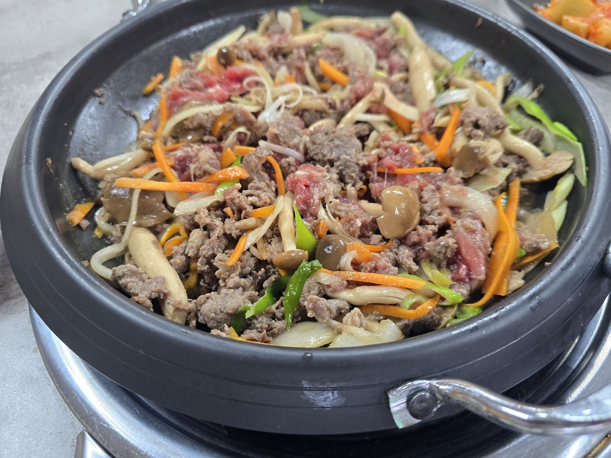

대표 메뉴


흑염소탕 · 흑염소전골 · 흑염소불고기
농장에서 직접 키운 흑염소로 정성껏 끓인 대표 메뉴입니다.

농장직영 / 재료 이야기
보이는 재료, 믿고 먹는 한 끼
직접 기르고 손질한 재료로, 눈에 보이는 만큼 믿을 수 있는 한 그릇을 준비합니다. 고추, 고사리 등 재료를 산지에서부터 정성껏 다듬습니다.
직접 담근 반찬

국물만큼 정성 들인 밑반찬
깍두기와 겉절이도 직접 담급니다.
직접 담근 깍두기
석박지 스타일로 담근 깍두기입니다.
사진 준비 중
겉절이
신선하게 무쳐낸 겉절이입니다.
조리 과정 사진 준비 중
(PHOTO_INVENTORY.md 10-1절 후보 확인 필요)
(PHOTO_INVENTORY.md 10-1절 후보 확인 필요)
조리 과정
오랜 시간 정성껏 끓여낸 국물
주방에서 오랜 시간 정성껏 끓여낸 국물, 눈으로 먼저 확인하세요. 육수를 내는 과정과 재료 손질 과정을 사실 그대로 보여드립니다.
매장 분위기

가족, 지인과 함께 편하게
부모님 모시고 오기 좋은 공간입니다. (좌석/접근성 정보 확정 후 문구 보강 예정)
매장 사진
준비 중
준비 중
매장 사진
준비 중
준비 중
후기 / 단골 이야기
다녀가신 분들의 이야기
아직 등록된 실제 후기가 없습니다. 실제 후기가 확보되면 이 섹션에 그대로 게시합니다
(없는 후기를 만들어 넣지 않습니다).
위치와 영업정보
오시는 길
| 주소 | 울산 북구 호계3길 17-17 (지번 호계동 681-11) · 우편번호 44229 |
|---|---|
| 전화 | 052-294-9947 |
| 영업시간 | 영업시간 확인 중 (사장님 확인 필요) |
| 휴무일 | 휴무일 확인 중 |
| 주차 | 20대 주차 가능 |
FAQ
자주 묻는 질문
Q. 흑염소 냄새가 강한가요?
A. 엄선된 사료를 먹여서 직접 사육하고 있어서, 원육 자체의 냄새가 많이 나지 않고, 도축 후 식재료 준비 과정에서 손질과 조리 과정에 신경 써서 준비하고 있어 잡내가 나지 않습니다.
Q. 어르신들이 먹기 괜찮나요?
A. 중장년층·어르신 손님도 편하게 드실 수 있도록 준비하고 있습니다. (확정 문구 TODO)
Q. 포장 가능한가요?
A. 네, 포장 가능합니다. 전 메뉴 포장됩니다.
Q. 예약 가능한가요?
A. 네이버 예약을 통해 예약하실 수 있습니다.
Q. 주차 가능한가요?
A. 20대까지 주차 가능합니다.
Q. 전골/불고기는 몇 인분부터 가능한가요?
A. 2인분 기준으로 주문 가능합니다.